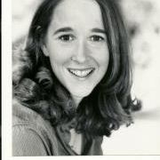

Judy Tyrer has been in the computer industry since almost it's inception. With over 30years of experience in the tech industry, she is one of the many pioneers proving that it wasn't just for the boys. Having experienced the times where women were not traditionally part of the workforce, she had quite the hill to climb. And when she had climbed one, she went to go climb another moving into the world of Game Development.
After graduating from SMU with a double major in English Literature and Secondary Education, Judy started in the Serious Games Business at Control Data Corporation where she had the unique privilege of working on PLATO, a computer based education system.From there Judy moved into the computer industry working on distributed UNIX operating systems, specializing in File Systems. During this time she served on the File System Committee for the Open Software Consortium and published a USENET paper on "Adding Tightly Consistent Replication to OSF's DFS".
Even with difficulties of being the bread-winner of her household as well as being a woman in a male dominated career, Judy never gave up on her other passions. For a short time she pursued limited acting roles, landing a supporting role in the independent film Alcatraz Avenue. Then as the tech industry reeled from exporting of jobs overseas, Judy took her English degree and became a middleschool teacher in Southern California.
Finally though, after raising two kids, a divorce, and looking to try something new, Judy decided to go back to her game playing robot fantasies from when she was 9. It was here she joined the game industry working at Ubisoft on the Ghost Recon series as a networking engineer and multi-player engine specialist. From Ubisoft, Judy moved to Sony Online Entertainment as Lead Engineer for Magic the Gathering: Tactics. She was then tapped by Linden Labs as Senior Engineering Manager of the Engine Room, the team responsible for server related software and simulations for Second Life.
